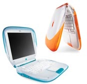
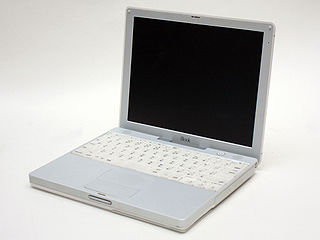

The iBook line was introduced in 1999, It targeted entry-level, consumer and education market. It was positioned lower than the powerbook, and specifications reflect that. The iBook is noted as being the first mass consumer product to offer Wi-Fi support, then known as AirPort. The iBook Lines and PowerBook Lines would merge in 2006 to form the MacBook Line, iBook would form the Macbook part of the line, while the Powerbook Line would form the MacBook Pro Line.
| Photo | Machine | Year Of Introduction | CPU | RAM | Hard Drive | Modem/Networking | Cache | Sound Card | GPU | Bundled Operating System | Bundled Software | Official Specs Sheet (May not work on old browsers) | Notes |
|---|---|---|---|---|---|---|---|---|---|---|---|---|---|
|  | iBook G3 (Clamshell) | 1999 | PowerPC G3 (PPC 750, 300MHz, Launch) PowerPC G3 (PPC 750, 366MHz, Special Edition) PowerPC G3 (PPC 750CXe, 366MHz, FireWire) PowerPC G3 (PPC 750, 466MHz, FireWire SE) |
32MB (Launch, PC66, Soldered Expandable to 544MB) 64MB (Special Edition, PC66 Soldered, Expandable to 576MB) 64MB (Firewire & Firewire SE, PC100, Soldered, Expandable to 576MB) |
3.2GB or 6.0GB (Launch) 6GB (Special Edition) 10GB (FireWire & FireWire SE) |
10/100 BASE-T Ethernet 56k V.90 Modem Airport 802.11B Card (Optional) |
64KB L1, 512 L2 Backside (Launch, SE) 64KB L1, 256KB L2 (FireWire, FireWire SE) |
Unknown | ATi Rage (4MB, Launch, SE) ATI Rage 128 (8MB, FireWire, FireWire SE) |
MacOS 8.6 (Launch) MacOS 9.0.2 (Special Edition) MacOS 9.0.4 (FireWire & FireWire SE) |
Unknown |
|
|
 Image by baku13, Licenced under Creative Commons Attribution-Share Alike 3.0 Unported & Attribution-Share Alike 2.1 Japan licence. |
iBook G3 (Snow) | 2001 | PowerPC G3 (750CXe, 500MHz, Mid 2001 to late 2001) PowerPC (750CX, Either 500 or 600 MHz, Late 2001) PowerPC G3 (745/755, 600MHz,early 2002, Early-to-Mid 2002)) PowerPC G3 750FX (700 MhZ (Mid 2002 - November 2002) PowerPC 750FX (800MHz (Late 2002 - April 2003) PowerPC G3 750FX(900 MHz,Early 2003 to EOP) |
64MB PC100, Soldered Expandable to 576MB (Launch to october 16 2001) 128MB, PC100, Soldered, Expandable to 640MB (Launch to May 20 2002) 128MB, PC100, Soldered, Expandable to 640MB(Early 2002, 12 Inch models to EOP) 256MB, PC100, Soldered, Expandable to 640MB(Early 2002, 14 Inch models, to EOP)
|
(Launch Until May 20th 2002) 10GB (Standard), 20GB (Optional) (October 16th 2001 to May 20th 2002) 15GB, 20GB (Standard), 30GB (Optional) (October 16th 2001 to January 7th 2002)15GB (Standard), 30GB (Optional) (October 16th 2001 to May 20th 2002) 20GB (Standard), 30GB (Optional) 20GB (Early 2002 to November 6th 2002) 30GB, (May 20th 2002 to November 20th 2002) 20GB (November 6th 2002 to April 22nd 2003, Opaque White and early Translucent White) 30GB (November 6th 2002 to April 22nd 2003 Mid to late Translucent White) 30GB (April 22nd 2003 to EOP) |
10/100 BASE-T Ethernet 56k V.90 Modem Airport 802.11B Card (Optional) |
64 KB L1, 256 KB L2 cache (Launch to Early 2002) 64 KB L1, 512 KB L2 cache (Mid 2002 to EOP) |
Unknown | ATi Rage 128 (8MB, Launch to Early 2002) ATi Radeon (16MB, AGP 2X, Mid 2002) ATi Radeon 7500 (16MB, AGP 2x, Opaque White, Late 2002) ATi Radeon 7500 (32MB, AGP 2X, Translucent White, Late 2002 to EOP) |
MacOS 9.1 (Launch) MacOS Classic 9.2.1 and MacOS X 10.1 Puma (Late 2001 to Early 2002) MacOS Classic 9.2.2 and MacOS X 10.1.4 Puma (Mid 2002) MacOS Classic 9.2.2 MacOS X 10.2.1 Jaguar (Late 2002) MacOS Classic 9.2.2 MacOS X 10.2.4 Jaguar (Early 2003 to EOP) |
Unknown | ||
| iBook G4 | iLife '04 Appleworks Quicken 2005 for Mac Worldbook Encyclopedia 2004 Edition Marble Blast Gold Nanosaur 2 |
The Performa line was introduced in 1992 and was produced until 1997. The performa line did not have their own original models, instead reusing existing models from other Macintosh lines such as Quadra, Centris, LC, Classic and Power Macintosh. The comptuers were usually bundled with additional software or bigger hard drives
The line was a complete failure, Unlike traditional Macintosh computers, The performa was not sold through Apple's traditional dealer network, instead, it was sold through big box stores such as Circuit City and Sears, These units were not taken care of however, and often were malfunctioning or were broken. Apple overestimated the demand for the Performa line.
The line was informally discontinued in 1997, following Steve Job's return to the company, and formally discontinued in 1998, following the company restructuring their product lines.